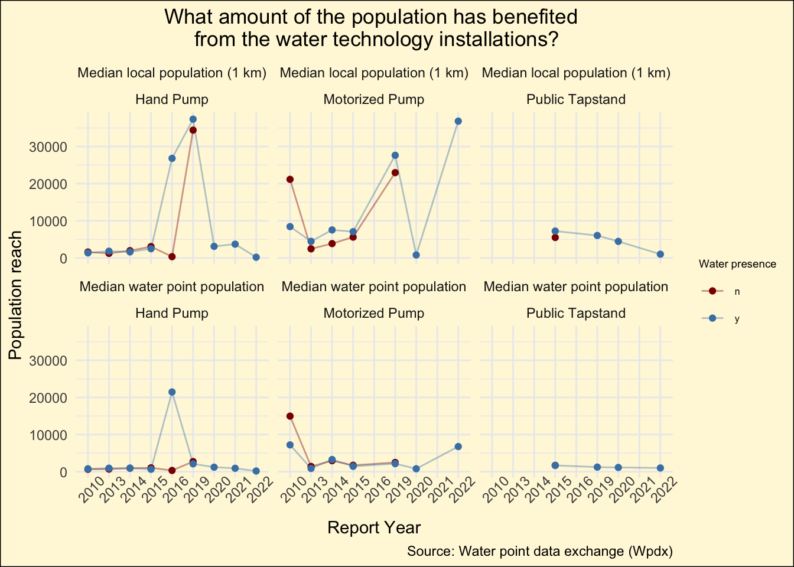

Three Interseting Insights from the Water Dataset
Which category of water technology caters to the most number of people?
What amount of population has benefitted from the water technology installations ?
The median local population within 1 km and water point populations for hand pumps and public tapstands dropped after 2018 while it was on the rise for motorised pumps for the same period.
Does that mean the installations are happening away from the cities where the general population is much lower ?

Are the recent installations moving away from the cities and focussing on regional areas ?
For hand-pumps and public tapstands, the median distance from the cities have increased post 2019. This indicates that the recent installations are moving away from the cities, possibly targetting the regional areas.
On the other hand, we see that the median distance for motorised pumps lie around the 25 km mark for the recent as well as the previous installations. This indicates that the recent motorised pump installations are still close to the cities, due to which the water point and local population within 1 km is on the rise.
Are there differences in predictions depending on models?
We found interesting differences in predictions for certain features between XGBoost and Randomforest Models:
Distribution of Water Availability Predictions across Installation Years
XGboost predicted higher counts of Y in the peak period of installation of water points than RF RF predicted higher counts of N in the peak period of water point installations than XGboost
Distribution of Water Availability Predictions across Water Technology Categories
Both models predict high availability (y) for hand pumps, XGBoost predicting even higher than RF. Noticeable difference in predictions for motorized pumps, XGBoost predicted higher y and RF predicted higher n.